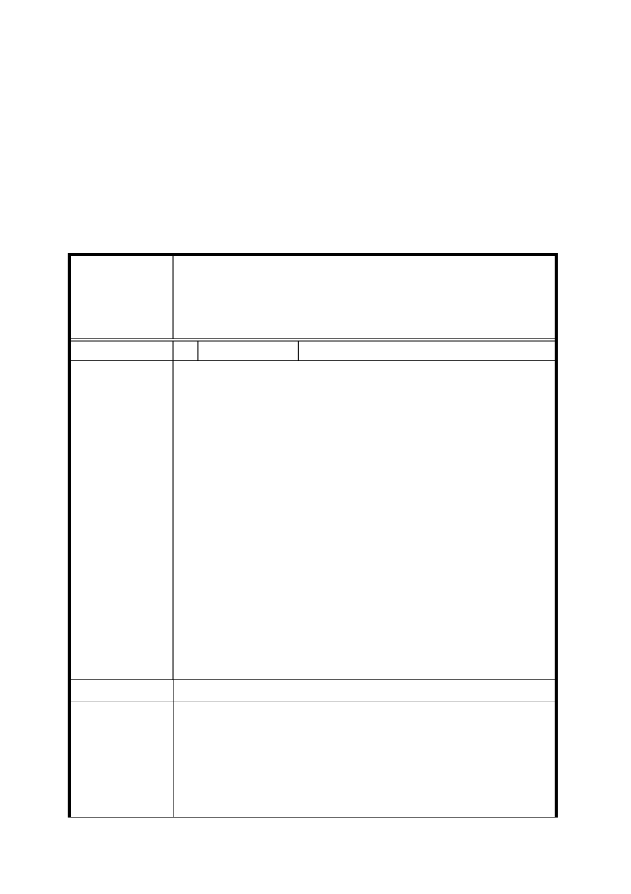

由，將庫倫街南側廣場用地規模增加，本委員會予以同意市
府所送修正版本。惟調整後之計畫內容請市府擬具以第三種
商業區(特)變更為停車場兼廣場用地之計畫內容與土地使
用管制，重新辦理公開展覽程序。在研擬計畫至公展期間請
市府持續與土地所有權人臺灣銀行股份有限公司進行協
商，研議出對環境改善更積極之作為。
三、 公民或團體所提意見審決如後附綜理表。
臺北市都市計畫委員會公民或團體所提意見綜理表
變更臺北市大同區捷運圓山站西側庫倫街南北兩側
案 名 部分第三種商業區（特）為廣場用地暨修訂土地使
用管制細部計畫案
編 號 1 陳情人 陳嘉彥、高朝國
1. 本陳情人為該計畫案之土地承租戶，本人在此營業行為
已數十年在案。而此次案市府於上述土地之決策，除應
考量實際之需求外，亦應考量本人等之利害關係，而後
再做兩全其美之權衡措施，而本人等現有之僅有承租土
地若再經徵收後，本人等仍需面對如轉業及社會適應性
等諸多之問題，若因此而造成更多的社會問題，恐亦非
市府所樂見。
陳 情 理 由 2. 市府所提變更廣場用地係為有效串連東西兩側之公共
開放空間，保障行人步行安全，其可採設計管制方式，
要求留設 10 公尺沿街無遮蔽人行步道且留設面積得計
入法定空地檢討，但仍保持第三種商業區(特)土地，而
無需變更為廣場用地，以維持民眾財產權益。
3. 為免庫倫街廣場之徵收需拆除現有地上物， 增加政府
補償支出與財政負擔，且拆除民房會導致人民對政府不
諒解及人民不便，因而導致政府支持度下降。
建議處理意見 請市府說明。
本計畫區位處 2010 年臺北國際花卉博覽會會場及北
大同文化園區中軸之關鍵位置，惟自圓山站西側出口至承
本府回應意見
德路三段間庫倫街兩側，未能提供友善、安全無虞之人行
空間，且周邊建物現況窳陋凌亂，影響地區環境景觀及周
邊公共資源之整合，環境改善刻不容緩。為能於短期內有
效利用閒置土地資源作為改善市容之示範區，並提供捷運
-9-